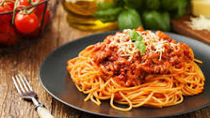

Recipe for cooking Spaghetti

Description
Spaghetti is a classic Italian dish beloved for its simplicity and versatility. This recipe combines tender strands of spaghetti with a rich and flavorful tomato-based sauce, enhanced with aromatic herbs like basil and oregano. It's a comforting meal that can be elevated with various additions, such as meatballs, grated Parmesan cheese, or sautéed vegetables. Perfect for family dinners or casual gatherings, spaghetti is easy to prepare and delivers a deliciously satisfying experience.
Ingredients
- 400g (14 oz) spaghetti
- 2 tablespoons olive oil
- 1 medium onion, finely chopped
- 3 garlic cloves, minced
- 2 tablespoons tomato paste
- 1 teaspoon dried oregano
- Salt and black pepper to taste
- Fresh basil leaves for garnish
Steps
- Cook the Spaghetti
Bring a large pot of salted water to a boil. Add the spaghetti and cook according to the package instructions until al dente. Drain the spaghetti, reserving 1/2 cup of the pasta water, and set aside.
- Prepare the Sauce Base
In a large skillet, heat the olive oil over medium heat. Add the chopped onion and sauté until translucent, about 3-4 minutes. Add the minced garlic and cook for an additional 1 minute, stirring frequently.
- Add Tomatoes and Seasonings
Stir in the crushed tomatoes, tomato paste, oregano, basil, salt, black pepper, and red chili flakes (if using). Reduce the heat to low and let the sauce simmer for 10-15 minutes, stirring occasionally.
- Combine Spaghetti and Sauce
Add the cooked spaghetti to the skillet with the sauce. Toss gently to coat the spaghetti evenly. If the sauce is too thick, add a splash of the reserved pasta water to reach the desired consistency
- Garnish and Serve
Remove the skillet from heat. Garnish with freshly grated Parmesan che
Back to home